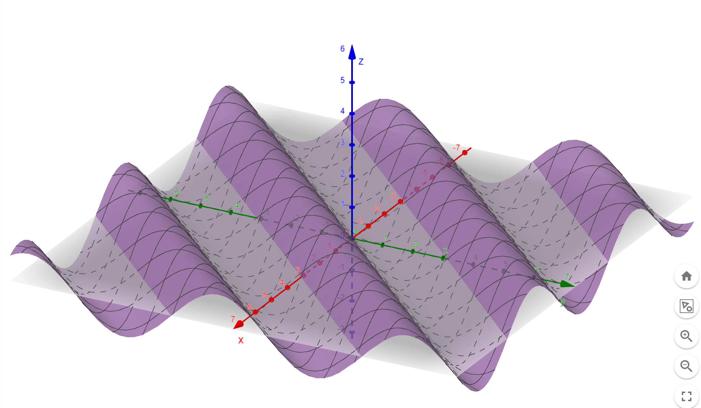
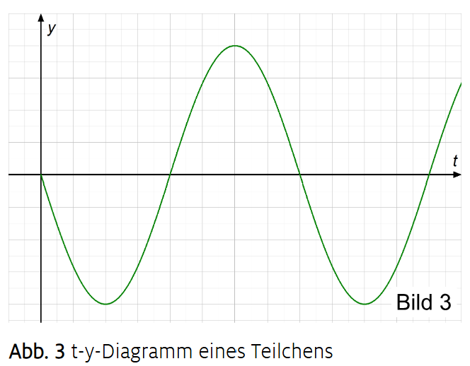
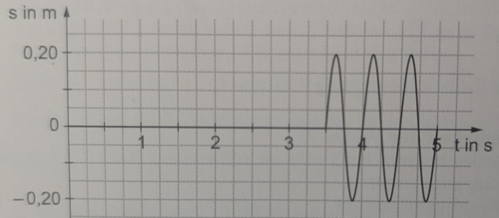
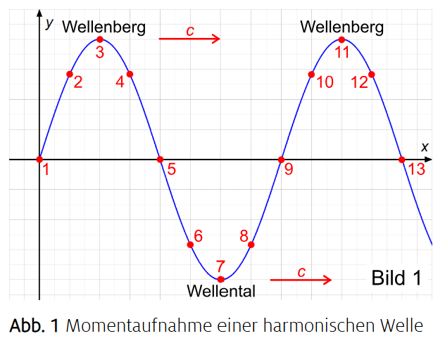
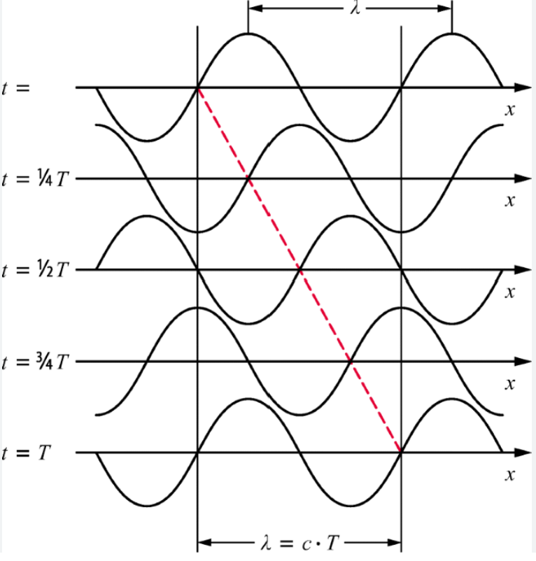
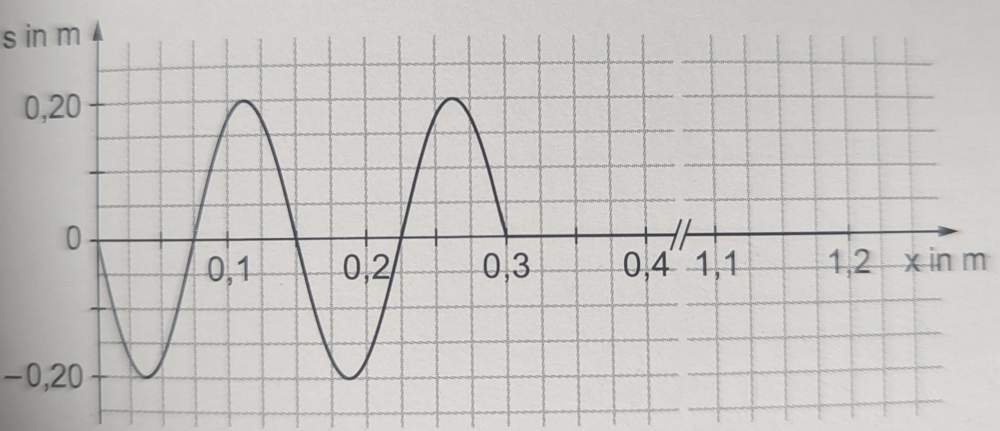
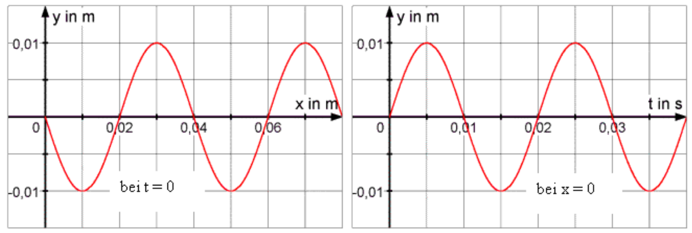
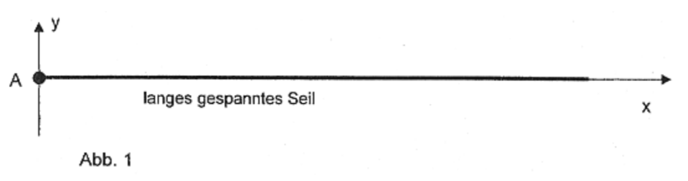
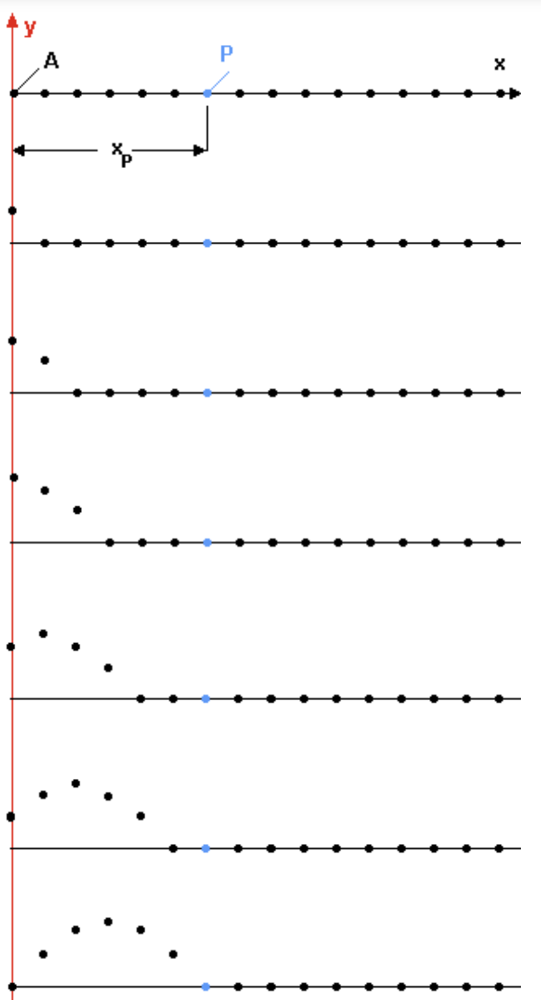

Hier lernst du nun, was eine Wellenfunktion ist und welche Möglichkeiten es gibt, sie zu zeichnen.
Bearbeite alle Aufgaben auf dieser Internetseite. Wenn du fertig bist, schreibe deinen Namen links unten in das Namensfeld und klicke auf den Button "Summary & submit" darunter, um deine Antworten abzusenden. Auf der letzten Seite "Ergebnisse" findest du dann alle deine Antworten, außerdem wird noch eine txt-Datei mit den Ergebnissen heruntergeladen.
Eine Wellenfunktion ist eine Vorschrift, die jedem Ort und jeder Zeit eine Auslenkung
zuordnet.
Ort entlang des Seils: x
Zeit: t
Auslenkung (z.B. nach oben/unten): y
Dann ist die Wellenfunktion typischerweise y(x,t)
Das bedeutet: Wenn du x und t vorgibst, sagt dir die Funktion, wie stark das Teilchen an dieser Stelle gerade ausgelenkt ist.
In dem Graphen nebenan ist
Die Welle bewegt sich mit der Zeit in positive x-Richtung

y(x,t) ist eine Funktion mit zwei „Eingaben“ (Ort und Zeit), deshalb kann man die Funktion nicht einfach zeichnen, es wäre eine dreidimensionale Fläche. Vielleicht probierst du es mit Geogebra selber aus?
Deshalb teilt man die Wellenfunktion zum Zeichnen auf zwei verschiedene Diagrammtypen auf.
Einmal zeichnet man die Funktion in Abhängigkeit vom Ort (bei festgehaltener Zeit) und einmal in
Abhängigkeit von der Zeit (bei festgehaltenem Ort).
Beide Diagramme sind Sinuskurven, aber sie zeigen völlig verschiedene Dinge, je nachdem, was man festhält.
Das ist der leichtere Part, da du das schon von den Schwingungen kennst. Du wählst einen festen Ort (also ein bestimmtes Teilchen/Seilstück) und beobachtest, wie es sich mit der Zeit bewegt.
Dann wird aus y(x,t) eine reine Zeitfunktion y(t).
Auf die x-Achse kommt die Zeit t.
Auf die y-Achse kommt die Auslenkung y.
Ergebnis: Das $t$-$y$ Diagramm ist ebenfalls eine Sinuskurve.
Interpretation: Du siehst die Schwingung eines einzelnen Teilchens (wie es auf und ab geht), wenn die Welle an ihm vorbeiläuft.
Zeitlicher Verlauf = „Wie schwingt ein bestimmter Ort im zeitlichen Verlauf?“
Diagramm: y gegen t bei festem x.
Da sich die Welle erst durch die Kopplungen der Teilchen ausbreitet, sind die einzelnen Sinusschwingungen der von der Welle erfassten Teilchen phasenverschoben. Die Phasenverschiebung $\Delta \phi = \omega t$ hängt davon ab wie weit das betrachtete Teilchen vom ersten Teilchen der Kette entfernt ist.

Wenn man den Anfang der Welle bei $x=0$ betrachtet, so hat dieses Teilchen die Phase $\Delta \varphi = 0 \quad \text{zur Zeit} \quad t = 0$.
Wenn man nun den Ort um einen Abstand $\Delta \varphi$ weiter wandert, ändert sich die Phase um $\Delta \varphi = k \cdot\Delta x = \frac{2\pi}{\lambda}\cdot \Delta x$, wobei $k$ die Wellenzahl ist mit $k=\frac{2\pi}{\lambda}$.
Nach einer ganzen Wellenlänge $\lambda$ ist die Phasendifferenz $\Delta\varphi = 2\pi$, das heißt, das Teilchen schwingt wieder in der gleichen Phase wie das erste Teilchen.
Nach einer halben Wellenlänge $\Delta x=\lambda/2$ ist die Phasendifferenz $\Delta\varphi = \pi$, das heißt, das Teilchen schwingt gegenphasig zum ersten Teilchen.
Die Amplitude $A$ der Schwingung ist für alle Teilchen gleich groß ($A$ ist ortsunabhängig), nur die Phase ändert sich mit dem Ort entlang des Seils.
Schaut man sich nun einen Punkt an, der einen bestimmten Abstand $x_0$ vom Anfang der Welle hat, so schwingt dieser Punkt mit einer Phasenverschiebung $\Delta\varphi$ im Vergleich zum Anfangspunkt der Welle.
Nun kommt eine einfache Erklärung, wie man ohne die Phasenverschiebung zu berechnen, die Welle zeichnen kann:
Man schaut, wann die Schwingung an dem Punkt ankommt, den man betrachtet, wenn zum Zeitpunkt $t=0$ die Schwingung am Anfangspunkt startet.
Da sich die Welle konstant mit der Geschwindigkeit c ausbreitet, kommt die Schwingung nach der Zeit $t_0 = \frac{x_0}{c}$ an dem Punkt an, der den Abstand $x_0$ vom Anfangspunkt hat.
Das heißt, man kann die Welle auch zeichnen, indem man die Schwingung am Anfangspunkt um die Zeit $t_0 = \frac{x_0}{c}$ nach rechts verschiebt, und bis dahin die Schwingung Null ist.
Beispiel 1: Ein Punkt ist $x_0$=105cm vom Erreger entfernt. Die Amplitude der Schwingung ist A=20cm und die Ausbreitungsgeschwindigkeit der Welle ist c=0,3 m/s.
Zum Zeitpunkt t=0s fängt der Erreger an mit Periodendauer T=0,5s nach oben zu schwingen.
Da es eine konstante Bewegung ist, mit der sich die Störung ausbreitet, gilt: $c=\frac{x_0}{t_0}$, also $t_0=\frac{x_0}{c} = \frac{1,05m}{0,3m/s} = 3,5s$, und somit fängt der Punkt erst $t_0=3,5s$ später an zu schwingen. Solange steht der Punkt still.
Danach fängt der Punkt mit der gleichen Amplitude A=20cm und der gleichen Periodendauer T=0,5s wie der Erreger nach oben an zu schwingen:

Momentaufnahme heißt: Du „friest“ die Zeit ein, also du wählst einen festen Zeitpunkt aus und betrachtest die Welle genau in diesem Moment.
Dann wird aus y(x,t) eine reine Ortsfunktion y(x) zu einem bestimmten Zeitpunkt t_0.
Auf die x-Achse kommt der Ort x (z.B. entlang des Seils).
Auf die y-Achse kommt die Auslenkung y.
Ergebnis: Das $x$-$y$ Diagramm ist eine Sinuskurve.
Interpretation: Du siehst die Form der Welle im Raum genau in diesem Moment (Berge und Täler entlang des Seils).
Momentaufnahme = „Wie sieht die Welle entlang des Seils gerade aus?“
Diagramm: y gegen x bei festem t.

Wie du bei der Simulation vielleicht gemerkt hast, muss man eine Welle rückwärts denken, wenn man sie zu einem bestimmten Zeitpunkt zeichen will, denn die Welle breitet sich mit der Zeit aus.
Hier eine Darstellung der Ausbreitung der Welle zu verschiednen Zeitpunkten:

Um ein Momentanbild der Welle zu zeichnen, startest du mit dem Anfang der Welle und betrachtest die Auslenkung y in Abhängigkeit von x zu einem festen Zeitpunkt $t_0$.
Du überlegst, wie weit $x_0$ die Welle in der Zeit $t_0$ gekommen ist, die du betrachten möchtest. Da sich die Welle mit konstanter Geschwindigkeit $c$ ausbreitet, ist die Welle $x_0 = c \cdot t_0$ zum Zeitpunkt $t_0$ gekommen.
Hier startest du die Kurve und zeichnest die Sinuskurve rückwärts nach links.
Startet die Schwingung nach oben, dann zeichnest du auch nach links zuerst nach oben. Startet sie nach unten, dann zeichnest du auch nach links zuerst nach unten.
Wenn du nun einen anderen Zeitpunkt $t_1$ betrachtest, dann ist die Welle fortgeschritten und somit die Auslenkung $y(x)$ phasenverschoben.
Die Phasendifferenz $\Delta \varphi$ bestimmt, wie weit sich die Schwingung schon fortbewegt hat.
Beispiel 2: Wie oben im Beispiel 1 fängt der Erreger zum Zeitpunkt t=0s mit einer Amplitude A=20cm und
Periodendauer T=0,5s nach oben zu schwingen an. Die Ausbreitungsgeschwindigkeit der Welle ist c=0,3 m/s.
wir betrachten die Schwingung als Momentanbild nach $t_0=1s$.
Da es eine konstante Bewegung ist, mit der sich die Störung ausbreitet, gilt: $c=\frac{x_0}{t_0}$, also $x_0 =
c \cdot t_0= 0,3 \frac{m}{s} \cdot 1s = 0,3m$, und somit sarten wir bei $x_0=0,3m$.
Danach zeichnen wir von da an die Schwingung rückwärts, d.h. nach links mit Amplitude A=20cm und
Periodendauer $\lambda=c \cdot T= 0,3 \frac{m}{s} \cdot 0,5s=0,15m$ zuerst nach oben:

Die folgende Animation verbindet die beiden Diagramme: die Momentaufnahme $y(x)$ oben und die Schwingung $y(t)$ an einem bestimmten Ort $x_1$ unten. So siehst du, wie sich der Ort der Welle räumlich verändert, während am markierten Ort die Zeit für die Schwingung abläuft.
Beim $x$-$y$ Diagramm ist die Zeit fest $t=t_0$ du siehst die räumliche Form der Welle.
Beim $t$-$y$ Diagramm ist der Ort fest $x=x_0$ du siehst die zeitliche Schwingung eines Teilchens.
Beide sehen „sinusförmig“ aus, aber:
y(x): Sinus im Ort (Wellenberge im Raum)
y(t): Sinus in der Zeit (Auf-und-ab-Schwingen)

Ordne die Diagramme und Begriffe richtig zu.
Heftaufschrieb 1: Beschreibe in deinen eigenen Worten die beiten Darstellungsweisen einer Welle, einmal als Schwingung eines Ortes und einmal als Momentanbild. Gehe auch auf die genaue Vorgehensweise zur Zeichnung der beiden Diagramme ein.
Tipp: Benutze die Callout-Boxen und die Kochrezepte!
Heftaufschrieb 2: Erkläre nochmal genau den Unterschied zwischen einem $x$-$y$ Diagramm und einem $t$-$y$ Diagramm, was jeweils dargestellt wird.
Tipp: Benutze die Callout-Boxen.
Berechne folgende Aufgabe, versuche erst, die Aufgabe alleine und selbstständig zu lösen. Wenn du nicht mehr weiter weißt, kannst du die Lösung aufdecken, decke sie dann aber immer wieder zu, wenn sie dich ein Stück weiter gebracht hat und löse von da wieder selbstständig:
Ein langes Gummiseil ist in $x$-Richtung gespannt. Der Seilanfang wird in $y$-Richtung zu sinusförmigen Schwingungen mit der Periodendauer $T=0,5 s$ und der Amplitude $A=2cm$ angeregt, siehe Abbildung.Zum Zeitpunkt $t_0=0s$ startet die Erregung bei A in positive $y$-Richtung. Die Welle breitet sich mit der Geschwindigkeit $c=0,2\frac{m}{s}$ aus.

a) Zeichne eine Momentaufnahme für den Zeitpunkt $t_2=1,125 s$.
b) Zeichne für $0s\leq t \leq 2,5s$ ein y-t-Diagramm der Schwingung des Seilpunkts B, der zu Schingungsbeginn $25cm$ vom Punkt Aentfernt ist.
Hier lernst du, welche Größen zur Beschreibung einer harmonischen Welle verwendet werden und wie sie miteinander zusammenhängen.
y -
Amplitude:
Maximale Auslenkung der schwingenden Teilchen einer Welle aus ihrer Ruhelage bzw.
Gleichgewichtslage. Die momentane Auslenkung zu einem bestimmten Zeitpunkt nennt man auch Elongation.
Wir gehen dabei davon aus, dass die Welle ungedämpft ist, d.h dass alle schwingenden Teilchen die gleiche
Amplitude wie das erregende Teilchen besitzen.
T - Schwingungsdauer:
Zeit, die jedes einzelne Teilchen der harmonischen Welle für eine volle
Schwingung benötigt. Wir gehen dabei davon aus,
dass alle schwingenden Teilchen die gleiche Schwingungsdauer wie das erregende Teilchen besitzen.
f - (Erreger-)Frequenz:
Anzahl der Schwingungsperioden jedes einzelnen Teilchens pro
Zeiteinheit. Wir gehen dabei davon aus, dass alle schwingenden Teilchen die gleiche Frequenz wie das
erregende Teilchen besitzen. Es gilt $f=\frac{1}{T}$ .
ω - Kreisfrequenz:
Überstrichener Winkel (im Bogenmaß) jedes einzelne Teilchens
pro Zeiteinheit. Wir gehen dabei davon aus, dass alle schwingenden Teilchen die gleiche Kreisfrequenz
wie das erregende Teilchen besitzen. Es gilt $\omega= 2 \cdot \pi \cdot f= \frac{2 \cdot \pi}{T}$
Unter den von uns genannten Annahmen sind Amplitude und Schwingungsdauer (bzw. Erregerfrequenz und Kreisfrequenz ) einer Welle allein durch den Erreger der Welle bestimmt.
c - Phasen- oder Ausbreitungsgeschwindigkeit der Welle:
Geschwindigkeit, mit der sich die Störung
über den
Wellenträger ausbreitet. Leicht zu bestimmen ist c, wenn man einen ausgezeichneten Punkt (z.B. den Wellenberg)
beobachtet.
Die Phasengeschwindigkeit c ist nicht mit der Geschwindigkeit der von der Welle erfassten Teilchen zu verwechseln.
Die Phasen- oder Ausbreitungsgeschwindigkeit einer Welle ist allein durch den Wellenträger bestimmt.
v - Schnelle:
Momentangeschwindigkeit der einzelnen Teilchen, die bei einer Welle um ihre Ruhelage schwingen. Die Schnelle $v$ ändert sich während der Schwingung andauernd, wohingegen die Ausbreitungsgeschwindigkeit $c$ der Welle (im selben Medium) konstant ist.
λ - Wellenlänge:
x-Abstand eines Teilchens zum nächsten Teilchen im gleichen
Schwingungszustand (d.h. die beiden Teilchen müssen die gleiche Auslenkung und die gleiche Geschwindigkeit
haben).
Anmerkung: Zu Teilchen mit gleichem Schwingungszustand sagt man auch gleichphasig schwingende Teilchen.
Eine harmonische Schwingung mit der Schwingungsdauer $T$ bzw. der Erregerfrequenz $f$ breitet sich in einem Medium mit der Ausbreitungsgeschwindigkeit $c$ in Form einer harmonischen Welle aus, damit ist die Wellenlänge $\lambda$ mit folgender Gleichung gegeben:
Wenn sich die Phase innerhalb einer Schwingungsdauer um genau eine Wellenlänge weiterbewegt, dann folgt daraus der zentrale Zusammenhang:
$c = \lambda \cdot f$
Anders gesagt, die Wellenlänge dieser Welle berechnet sich durch:
$ \lambda = c \cdot T = \frac{c}{f} $
Die Phasengeschwindigkeit einer harmonischen Welle ist identisch dazu somit gegeben durch:
$ c = \lambda \cdot f = \frac{\lambda}{T} $
Verändere in der folgenden Simulation die Ausbreitungsgeschwindigkeit $c$, die Erregerfrequenz $f$ und die Amplitude $\hat{y}$ und beobachte, wie sich die Wellenlänge $\lambda$ ändert. Versuche, eine Intuition dafür zu bekommen, wie die einzelnen Größen zusammenhängen.
In den bisherigen Überlegungen und der Simulation breitet sich eine Welle aus. Dabei kommen die einzelnen Teilchen (Körperchen) aber nicht von der Stelle; sie schwingen lediglich um ihre Ruhelage (bei einer Transversalwelle senkrecht zur Ausbreitungsrichtung des Wellenberges einmal nach oben und dann wieder zurück).
Ihre Momentangeschwindigkeit, die sich bei der Hin- und Herbewegung dauernd ändert, bezeichnet man als Schnelle $v$. Dieser besondere Name soll den Unterschied zur konstanten Ausbreitungsgeschwindigkeit $c$ der Störung hervorheben.
Die Vektoren der Schnelle $v$ und der Ausbreitungsgeschwindigkeit $c$ stehen hierbei orthogonal (senkrecht) zueinander.
Für eine einzelne Schwingung eines Teilchens gilt:
Heftaufschrieb 3: Schreibe dir alle Physikalischen Größen auf und erkläre sie in deinen Worten.
Tipp: Benutze die Callout-Boxen.
Eine ähnliche Simulation findest du auf folgender Internetseite (etwas weiter unten auf der Seite): Zur Simulation
Mache das Quiz auf folgender Internetseite: Zur Internetseite
Bearbeite folgende Aufgabe: Aufgabe Seilwelle
Hier lernst du nun, wie genau die Wellenfunktion aussieht und wie du sie Schritt füt Schritt aufstellst.
Zur Erarbeitung der Wellenfunktion betrachten wir einen Wellenträger, der auf der x-Achse liegt. Einzelne, gleichabständige Punkte des Trägers sind im unteren Bild skizziert.
Zwischen diesen Punkten besteht eine Kopplung. Der im Punkt A liegende Körper wird im ersten Bild "sinusförmig" in positive y-Richtung ausgelenkt, die anderen Körper sind noch in Ruhe.
Im Bild darunter hat Körper A schon eine gewisse Auslenkung, der zweite Körper wird gerade von der Störung erfasst und beginnt gerade in positive y-Richtung zu schwingen usw.
Ziel ist es, die Auslenkung eines von der Welle erfassten Teilchens in y-Richtung an einem beliebigen Ort x und zu einer beliebigen Zeit t mathematisch zu beschreiben, z.B. im Punkt P.
Die entsprechende Funktion ist die von uns gesuchte Wellenfunktion.
Die Periode T der Schwingung ist die Zeit, die der Körper A für eine volle Schwingung benötigt.
Die Amplitude y ist die maximale Auslenkung des Körpers A aus seiner Ruhelage.
Die Frequenz f ist die Anzahl der Schwingungen pro Sekunde.

Die Funktion, die die Schwingung des Körpers A beschreibt, lautet:
\[y(t)\ =\ \hat{y} · sin(\omega · t)\quad \text{ mit } \quad\omega = 2\pi f =\frac{2\pi}{T}\]
Aufgrund der Kopplung der Teilchen wandert die Störung mit der Geschwindigkeit c entlang der positiven x-Richtung.
Somit wird der Punkt P erst nach einer gewissen Zeit $\Delta t$ von der Störung erfasst, es gilt:
\[ \Delta t = \frac{x}{c} \]
Der Körper P fängt also um die Zeit $\Delta t$ verspätet an zu schwingen. Somit gilt für die Funktion, die dessen Schwingung beschreibt:
\[y(t)\ =\ \hat{y} · \sin\left(\omega · \left(t - \Delta t\right)\right) \]
Einsetzen von $\Delta t$ liefert:
\[y(x,t)\ =\ \hat{y} · \sin\left(\omega · \left(t - \frac{x}{c}\right)\right) \]
Umschreiben von $\omega = \frac{2\pi}{T}$ liefert:
\[y(x,t)\ =\ \hat{y} · \sin\left(\frac{2\pi}{T} · \left( t - \frac{x}{c}\right)\right) \]
Ausmultiplizieren von $\frac{1}{T}$ ergibt:
\[y(x,t)\ =\ \hat{y} · \sin\left(2\pi · \left( \frac{t}{T} - \frac{x}{T \cdot c}\right)\right) \]
Umschreiben von $c = \lambda f \ \Rightarrow\ \lambda = c \cdot T $ liefert:
\[y(x,t)\ =\ \hat{y} · \sin\left(2\pi · \left( \frac{t}{T} - \frac{x}{\lambda}\right)\right) \]
Dies ist die gesuchte Wellenfunktion, die die Auslenkung y eines von der Welle erfassten Teilchens an einem beliebigen Ort x und zu einer beliebigen Zeit t beschreibt.
An dem Minus vor dem $\frac{x}{\lambda}$ sieht man auch die Verschiebung nach rechts und das "rückwärts zeichnen".
Heftaufschrieb 4: Schreibe dir die mathematische Darstellung der Wellenfunktion auf und erkläre die Bedeutung der einzelnen Größen.
Tipp: Benutze die Callout-Boxen.
Versuche wieder erst selber zu lösen, bevor du nachschaust.
Gleiche Bedingung wie vorher: Ein langes Gummiseil ist in $x$-Richtung gespannt. Der Seilanfang wird in $y$-Richtung zu sinusförmigen Schwingungen mit der Periodendauer $T=0,5 s$ und der Amplitude $A=2cm$ angeregt, siehe Abbildung.Zum Zeitpunkt $t_0=0s$ startet die Erregung bei A in positive $y$-Richtung. Die Welle breitet sich mit der Geschwindigkeit $c=0,2\frac{m}{s}$ aus.
a) Wo befindet sich zum Zeitpunkt $t_1=2,4s$ der Seilanfang?
b) In welche Richtung und mit welcher Geschwindigkeit bewegt er sich zum Zeitpunkt $t_1$?